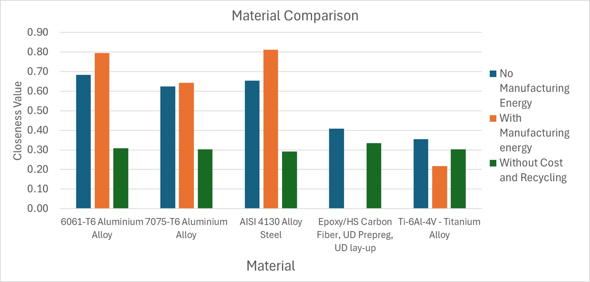
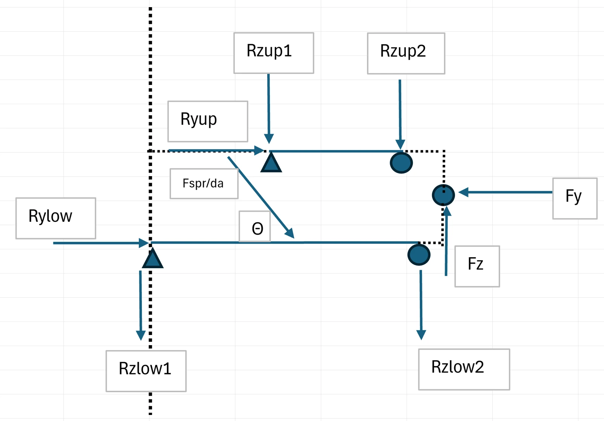
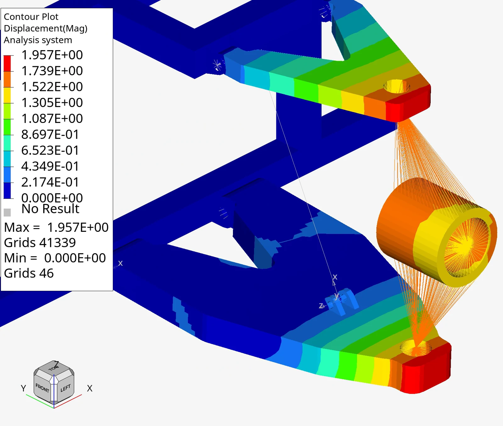

MSc Vehicle Structures · Cranfield University · 2025 · Individual
Double Wishbone Arm Optimisation
Lighter upper and lower suspension arms for a double wishbone, from material choice through topology optimisation to a fatigue check.

- ~34%Lighter arms after topology optimisation: 6.887 kg to 4.556 kg, measured on the redesigned CATIA parts
- 1.95 mmPeak displacement at the knuckle, against a 2 mm limit in every direction
- 6061-T6Aluminium alloy chosen through Ashby charts and two multi-criteria ranking methods
- 31,126Load cycles in the 30-year fatigue target the arms were assessed against
The brief
Choose a material for the upper and lower arms of a double wishbone suspension, cut their mass with topology optimisation while keeping them stiff enough, then check their fatigue life. Individual assignment, Vehicle Structures module, Cranfield MSc, November 2025.
Material selection
The arms need low weight, high stiffness and strength, good fatigue resistance and corrosion resistance. I filtered candidates on Ashby charts in Granta (Young's modulus against density, yield strength against density, and modulus against yield strength), then ranked five shortlisted materials with Simple Additive Weighting and TOPSIS.

- Without cost and recycling, carbon fibre composite ranked first. With cost and recycling, 6061-T6 aluminium ranked first. With manufacturing energy, AISI 4130 steel ranked first.
- Choice: 6061-T6 aluminium. Its stiffness-to-weight index was 96.9 against 59.2 for steel, and its strength-to-weight index 6.13 against 2.73. Overall it ranked close to the steel, and the lower mass cuts emissions over the vehicle's life.
Loads by hand
The load case uses a Honda Accord of about 1,470 kg, split into a 367.5 kg corner mass. That corner mass at 3 g vertical gives 10,815 N, and at 1 g longitudinal and lateral gives 3,605 N.

The full system has seven unknowns and three equilibrium equations, so it is statically indeterminate. Taken alone, the upper arm is determinate with three unknowns. The lower arm has four, because the spring force is also unknown.
Topology optimisation
In HyperMesh and OptiStruct I set both arms as design space, with the objective of minimum mass and a constraint of no more than 2 mm displacement in any direction. I then redesigned the arms from the load paths the optimiser left and measured their mass in CATIA.

Fatigue check
I ran a high-cycle S–N fatigue analysis in HyperLife with a fully reversed stress ratio (R = −1) as the worst case. Cyclic loads came from WLTP drive-cycle accelerations applied to the corner mass, with a 1.5 factor on top. A 30-year life at 15,000 miles a year gives the target of 31,126 cycles.
The arms passed the target, but I don't trust the margin. WLTP is a smooth emissions cycle: it has no potholes, kerb strikes or hard braking events, and those set fatigue damage in a real suspension. A 30-year target is also long for a suspension arm. That doubt is why I am re-running this study in open-source tools.
What I'd do differently
- Use the performance index to screen, not to decide. The marker's feedback was that I used it for the final choice when it belongs at the filtering stage.
- Build the fatigue load spectrum from road events, not a drive cycle, and discuss the fatigue result in more depth.
Tools: Granta, HyperMesh, OptiStruct, HyperLife, CATIA V5, Excel
← All projects